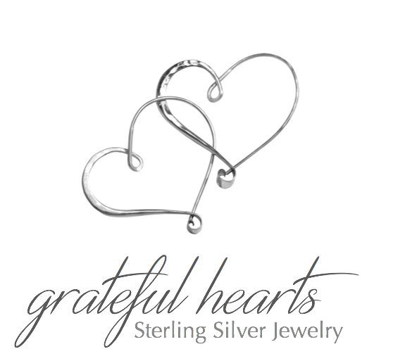
Supporting your fundraising goals
Mother's Day and fall dates are filling up fast.
Call today to set up your next Grateful Hearts Fundrasing Event!
248.496.8369
Call today to set up your next Grateful Hearts Fundrasing Event!
248.496.8369
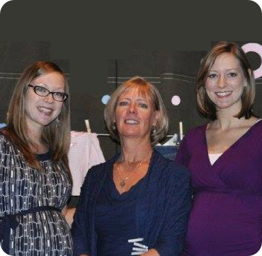
About Us
Grateful Hearts Jewelry is a family-owned sterling silver jewelry company whose unique mission is to work with hospitals, businesses and organizations in order to raise funds for charities and nonprofits. We set up a beautiful display of unique jewelry in hospitals and business locations. Staff and visitors alike enjoy the benefit of shopping without leaving the workplace. We give a percentage of the sales to the business's or organization's charity of choice.
Locations
We have work with a number of hospitals and corporations, primarily in Michigan, including:
Hospitals
Hospitals
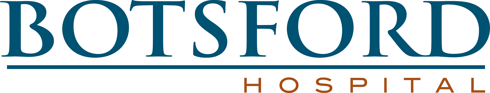
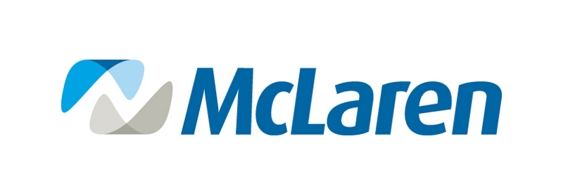
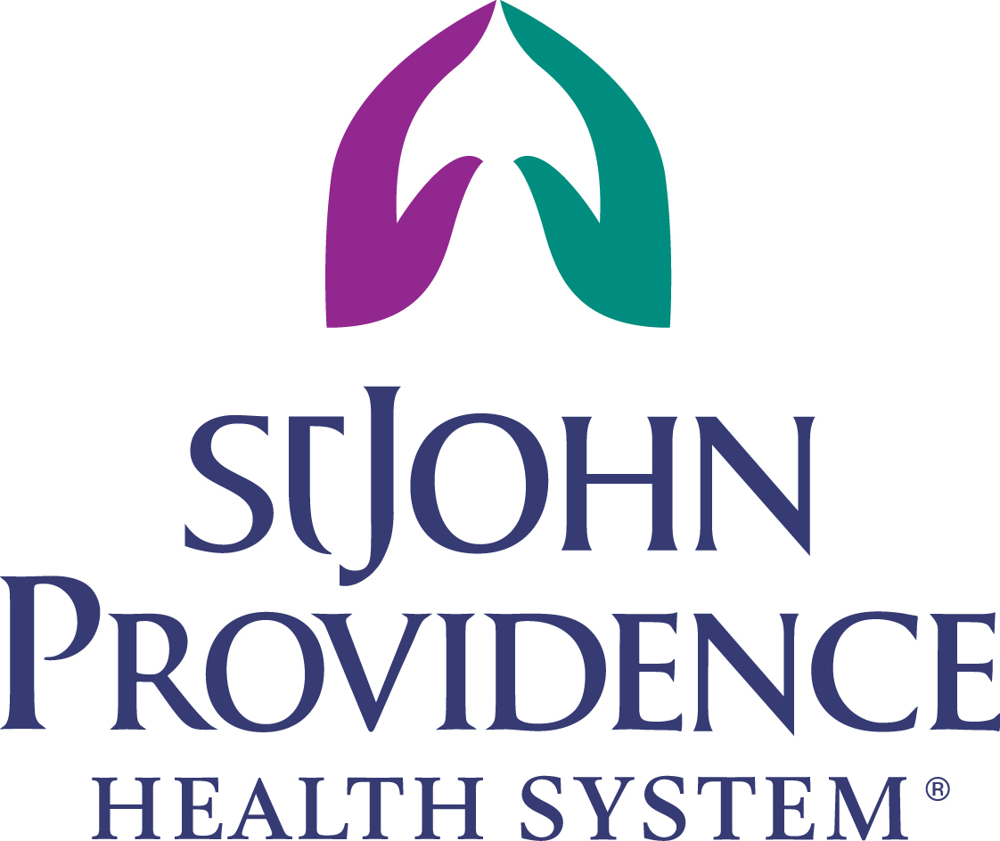
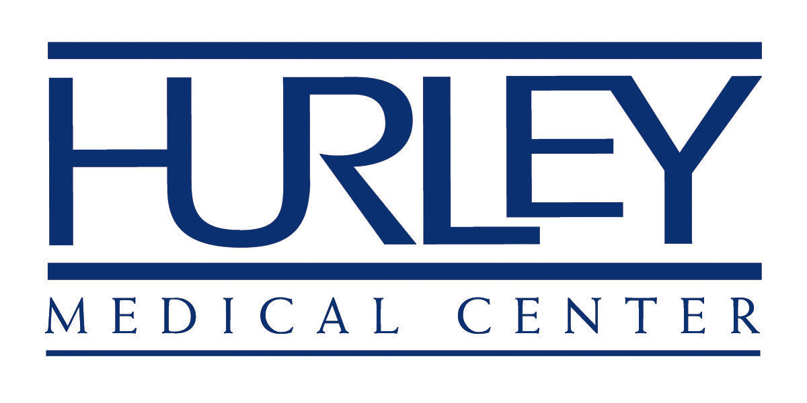
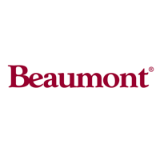
Corporations

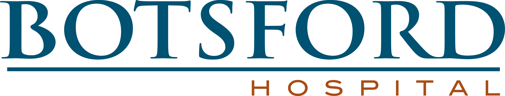
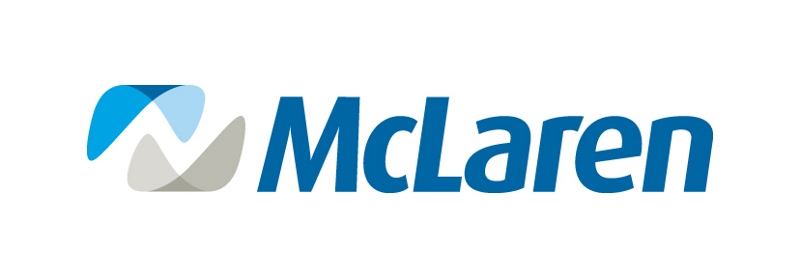
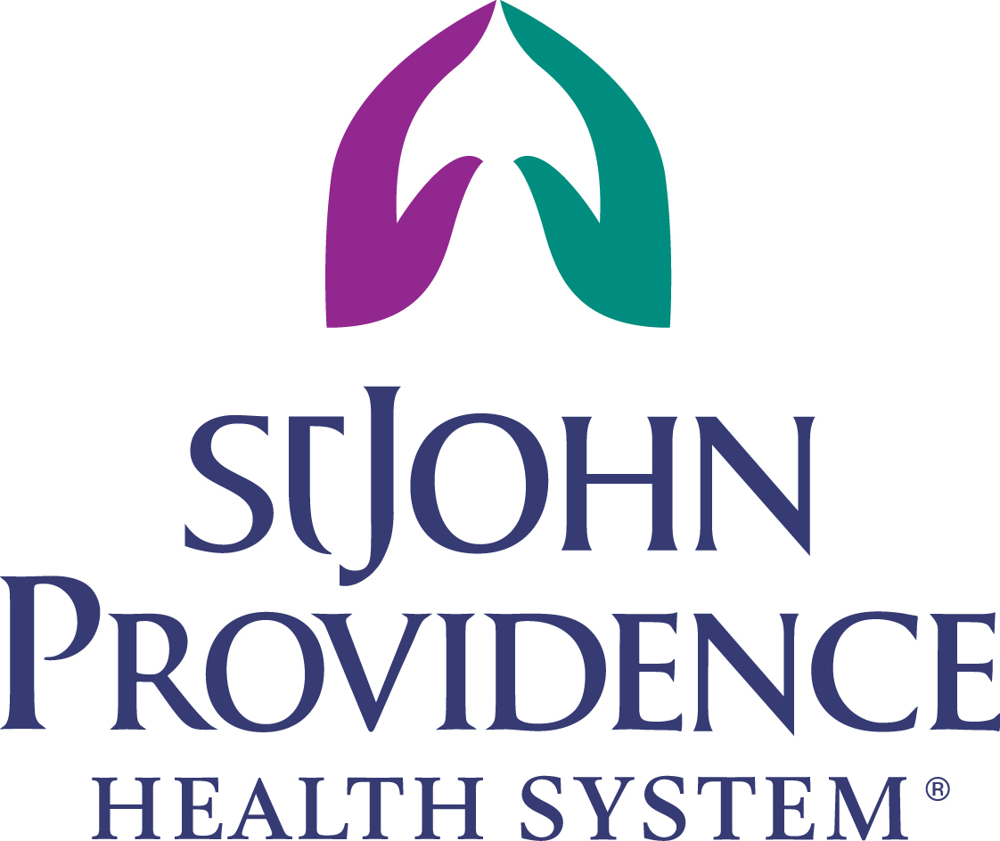
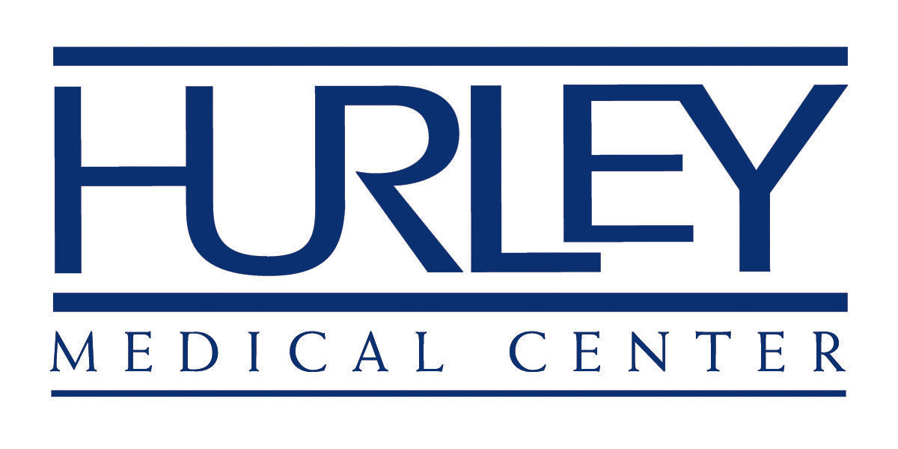
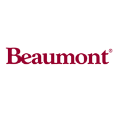
Our Jewelry
Our jewelry selection includes earrings, pendants, anklets, bracelets, rings, toe rings, chains and necklaces, all set in sterling silver. Our pieces include semi-precious stones as well as marcasite, cubic zirconium and Italian glass. We carry men's items too and a smaller selection of stainless steel and tungsten. Our prices are 50% below retail and range between $3 and $130 with the majority of items under $35, making it affordable to all. We provide a knowledgeable sales staff, an elegant display and we accept all forms of payment including payroll deduction, if available. The quality and selection of our sterling silver jewelry and our 90 day guarantee always generate high sales, ensuring the organizations with which we work a substantial financial benefit. We welcome the opportunity to partner with you. Please contact us today about scheduling a Grateful Hearts Jewelry Event.
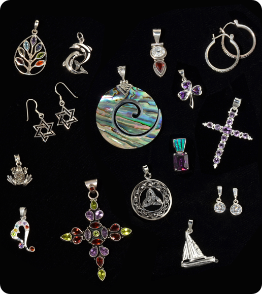
Charities We Support
While we have worked with a wide variety of charities and nonprofits, these are a few of the organization we are proud to support:
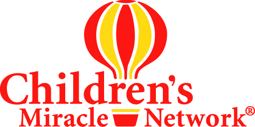
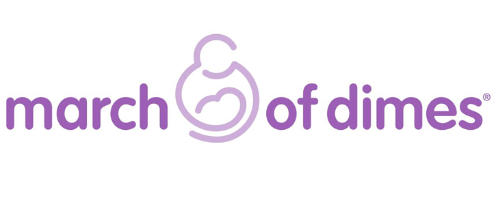
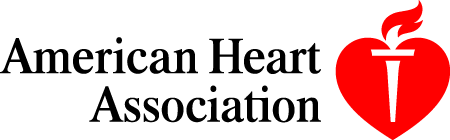
Upcoming Events
Contact Us
Lynn Dulmage
P.O. Box #1021
Union Lake, MI 48387
248.496.8369 GratefulHeartsJewelry@gmail.com
90 days on returns
Union Lake, MI 48387
248.496.8369 GratefulHeartsJewelry@gmail.com
90 days on returns
Book your next Grateful Hearts event today!
248.496.8369
248.496.8369